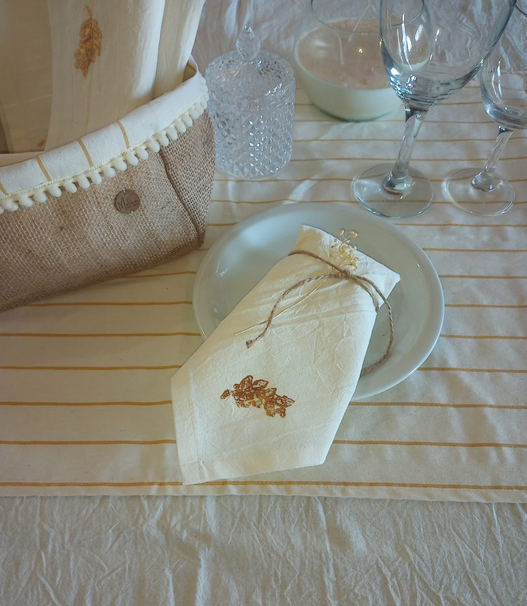

Mulan - Deco textil
¿Que es la artesanía?
La etimología de la palabra «artesanía», deriva de las palabras latinas artis-manus que significa: arte con las manos.
La artesanía comprende, básicamente, obras y trabajos realizados manualmente y con poca o nula intervención de maquinaria, habitualmente son objetos decorativos para el hogar.
¿Que son las manualidades y las artensanías?
Las manualidades son trabajos hechos con las manos, especialmente por escolares para aprender a trabajar con distintas técnicas y materiales.
La artesanía, en cambio, también elaborada a mano, mediante un conjunto de técnicas tradicionales, tiene un valor artístico, cultural y simbólico único.
.jpeg)
¿Cuales son los diferentes tipos de artesanías?
- Cerámica
- Piel y Cuero
- Textil
- Joyería
- Instrumentos Musicales
¿Que artesanías se producen en nuestra comunidad?
La talabartería argentina es famosa en el mundo. Podés comprar algún ornamento de montar (este es el origen de la artesanía en cuero), o prendas de vestir (botas de potro, sombreros, carteras, zapatos, lo que se te ocurra).
La alfarería y los tejidos del Noroeste son muy tradicionales.
¿Que hacen los Artesanos?
- Alfarería
- Carpintería
- Bordado
Es el arte de elaborar objetos de barro o arcilla.
Es el arte donde se trabajan tanto la madera como sus derivados.
Es el arte que consiste en la ornamentación por medio de hebras textiles, de una superficie flexible.
Compra Artesanías Argentinas
- Artesanías indígena: engloba la cerámica, la cestería, los tejidos e hilados, la talabartería y el arte plumario.
- Artesanías mestiza/criolla: abarca los bordados y encajes, las tallas de madera, los diferentes productos de metal, cuero y alfarería.